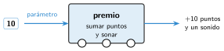

Funciones y parámetros
🤔 Pienso5 min
Qué hago aquí: Piensa un momento y contesta con lo que ya sabes. No pasa nada si no lo sabes: es para empezar.
Un libro de recetas dice: «Prepara la masa (mira la página 12)». ¿Por qué no copia la receta de la masa en cada tarta?
📖 Leo y aprendo15 min
Qué hago aquí: Lee despacio, mira los dibujos y los ejemplos, y quédate con la idea clave del final.
Si usas el mismo grupo de bloques en varios sitios, puedes darle un nombre. Así creas un bloque nuevo: una función.
Muchas funciones necesitan un dato para trabajar. Ese dato es un parámetro.

✏️ Hago25 min
Qué hago aquí: Haz las actividades en orden. Empieza siempre por las básicas.
Completa: primero se la función y después se .
La función doble(n) escribe el doble de n. ¿Qué escribe doble(4)? ¿Y doble(15)?
Programa la función premio en App Lab. Llámala desde un botón.
Añade dos botones más que llamen a premio con 5 y con 25 puntos.
Escribe dos ventajas de usar funciones.
✏️ Puedes responder escribiendo, con un dibujo o un esquema, o contándolo en voz alta.
🚀 Amplío (si quieres saber más)
Qué hago aquí: ¿Has terminado? Lee la curiosidad o elige el reto. Es voluntario.
Crea la función rectangulo(base, altura), con dos parámetros. Que escriba el área del rectángulo. Pruébala con tres rectángulos.
✅ Compruebo5 min
Qué hago aquí: Contesta sin mirar la ficha y marca cómo lo llevas.